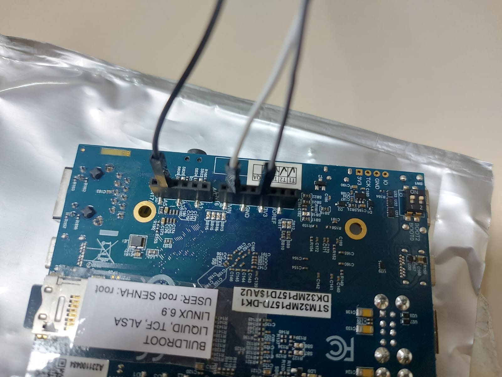
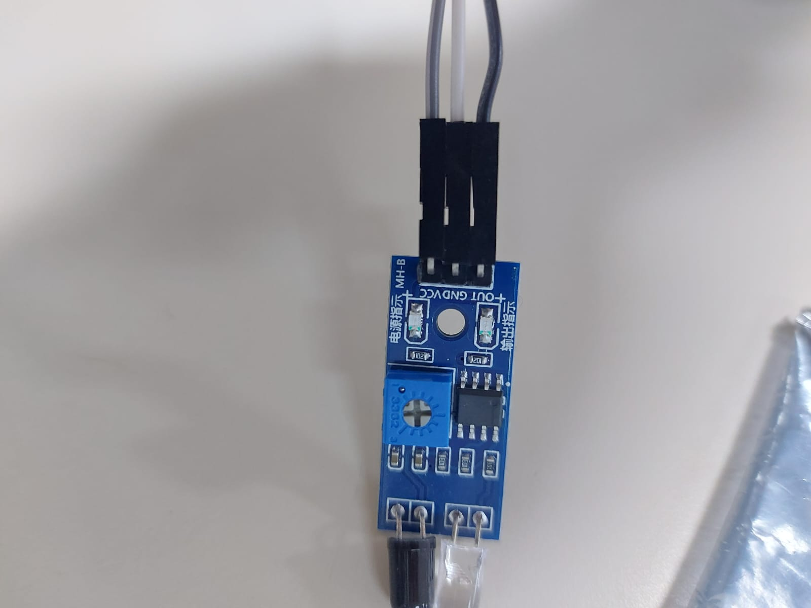
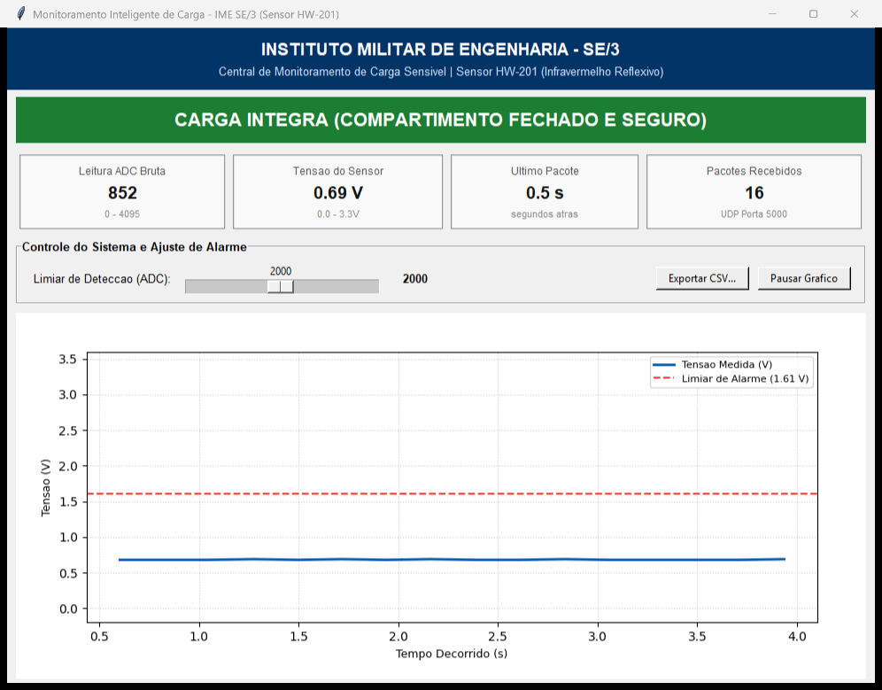
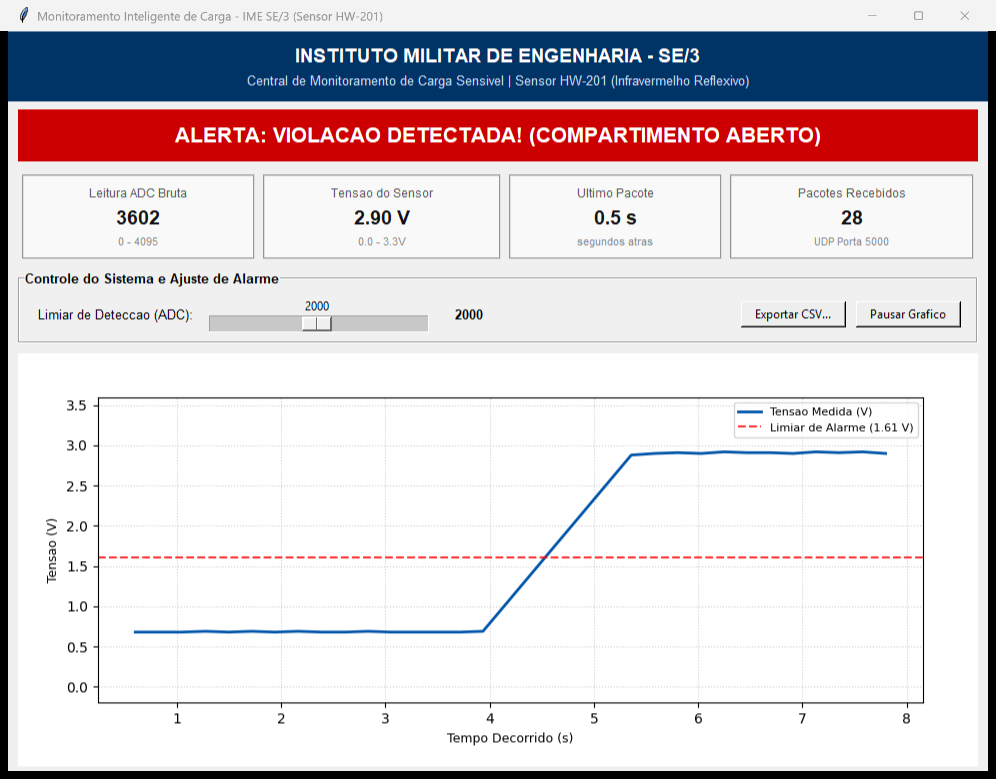

Monitoramento contínuo contra abertura não autorizada de compartimento de carga utilizando C++17 estritamente Orientado a Objetos (zero variáveis globais) sobre o subsistema Linux Industrial I/O (IIO) na placa STM32MP157D-DK1, com telemetria UDP em tempo real e interface gráfica supervisória em Python.
| Etapa | Prazo | Escopo Implementado no Repositório | Commit de Entrega | Tempo |
|---|---|---|---|---|
| Entrega 0 | 19/10/2026 |
Conexão física segura nos headers (3V3, GND e ADC) com o kit desligado. |
ed3eb08 |
~1 min |
| Entrega 1 | 26/10/2026 |
Classe C++ IrObstacleSensor encapsulada + Documentação Doxygen. |
933267a |
~1,5 min |
| Entrega 2 | 02/11/2026 |
Cross-compilação ARM, leitura IIO real no kit STM32MP1 e instruções de deploy. | d4b8184 |
~1,5 min |
| Entrega 3 | 09/11/2026 |
Classe UdpTransmitter, envio UDP em tempo real e documentação do protocolo JSON. |
8fb8f14 → 779a547 |
~1,5 min |
| Entrega 4 | 16/11/2026 |
Interface Gráfica Python (histórico 60s, alerta visual, limiar e CSV) + Apresentação. | Entrega Final + Demo ao Vivo | ~2,5 min |
0,0V–3,3V
stm32-adc expõein_voltageX_raw em sysfs
IrObstacleSensor lê ADC,TelemetryDashboard escutaUdpTransmitter enviaA cada 250 ms: leitura bruta raw → conversão V = (raw / 4095) * 3,3 V → comparação com o limiar (2000 / 1,61 V) → transmissão UDP imediata → atualização gráfica e log.
~0,68 V).~2,90 V).| Pino HW-201 | Conector na Placa | Posição Exata (dir. → esq.) |
|---|---|---|
| VCC | Bloco Direita (8 furos — Power) | Pino 4 (3V3) |
| GND | Bloco Direita (8 furos — Power) | Pino 7 (GND) |
| OUT | Bloco Esquerda (6 furos — Analog) | Pino 5 (Entrada ADC) |

Kit STM32MP157D-DK1 desligado (Pinos 3V3, GND e ADC)
Conexão nos pinos VCC, GND e OUT do sensor HW-201IrObstacleSensor (C++17)- devicePath : string - rawThreshold : int - lastRawValue : int - referenceVoltage : double - maxAdcResolution : int - autoDetectIioChannel() : bool ------------------------------ + readRaw() : int + getVoltage() : double + isObstacleDetected() : bool + isCompartmentViolated() : bool + getFormattedStatus() : string + runTelemetryLoop(tx, n, ms)
UdpTransmitter (C++17)- serverIp : string - serverPort : int - sensorId : string - sockfd : SOCKET (RAII) - destAddr : sockaddr_in - initSocket() / cleanupSocket() ------------------------------ + sendRawMessage(msg) : bool + sendTelemetryJson(raw, V, viol, ts) + sendTelemetryCsv(raw, V, viol) + setServerIp / getServerIp + setServerPort / getServerPort
TelemetryDashboard (Python)- udp_port : int (5000) - times, voltages (maxlen=240) - threshold : int (2000) - is_violated : bool - csv_filename : string ------------------------------ + init_csv() / build_ui() + udp_listener() + update_gui_loop() + on_threshold_change(val) + toggle_pause() / export_csv()
Arquitetura estritamente Orientada a Objetos: zero variáveis globais ou funções soltas, compatibilidade dual POSIX/WinSock via RAII, e documentação HTML automática gerada via doxygen Doxyfile em docs/doxygen/html/index.html.
arm-buildroot-linux-gnueabihf-g++ (-std=c++17 -O2).push.# Compilação nativa (PC / testes locais): make clean && make # Compilação cruzada ARM (STM32MP157D-DK1): make cross # ou: bash scripts/cross_build.sh # Envio via SCP e execução no kit: scp app_sensor_arm root@192.168.42.2:/home/root/ ./app_sensor_arm /sys/bus/iio/devices/iio:device0/in_voltage0_raw 0 192.168.42.10 5000
Conversão linear: V = (ADC / 4095) × 3,30 V | Limiar padrão: 2000 (1,61 V).
| Condição da Carga | Leitura ADC | Tensão | Diagnóstico |
|---|---|---|---|
| Tampa Fechada (Reflexão IR presente) |
< 2000(tip. 100 a 900) |
0,08 V a 0,75 V |
Carga: INTEGRA |
| Tampa Aberta (Sem reflexão IR) |
≥ 2000(tip. 3500 a 4095) |
2,80 V a 3,30 V |
VIOLACAO DETECTADA! |
[0001] [SENSOR HW-201] Bruto: 850 (0.68 V) | Obstaculo: PRESENTE | Carga: INTEGRA (SEGURA) [0004] [SENSOR HW-201] Bruto: 3600 (2.90 V) | Obstaculo: AUSENTE | Carga: VIOLACAO DETECTADA!
8fb8f14 — feat(udp): métodos de consulta de endpoint na classe UdpTransmitter.e11bb71 — feat(sensor): laço runTelemetryLoop() em IrObstacleSensor e integração em main.cpp.7dad673 — build: inclusão de UdpTransmitter.cpp no Makefile, cross_build.sh e CI.779a547 — docs: especificação do protocolo UDP, instruções atualizadas e Doxygen.Também há suporte ao formato compacto CSV via sendTelemetryCsv().
5000){
"sensor_id": "G3_IR_HW201",
"raw": 850,
"voltage": 0.68,
"unit": "V",
"violated": 0,
"timestamp": 1762640400125
}
| Campo | Tipo | Descrição |
|---|---|---|
sensor_id | string | Identificador do sensor ("G3_IR_HW201") |
raw / voltage | int / double | Leitura ADC bruta (0–4095) e Tensão em Volts |
violated | int | Flag de violação (0 = íntegra, 1 = violada) |
timestamp | int64 | Instante da leitura em ms (época UNIX) |

Estado Normal: ADC = 852 (0,69 V < 1,61 V) → Banner VERDE (CARGA ÍNTEGRA)
Violação: ADC = 3602 (2,90 V ≥ 1,61 V) → Banner VERMELHO (ALERTA DE VIOLAÇÃO!)Funcionalidades: janela temporal deslizante de 60 s (240 amostras a 4 Hz), slider de ajuste dinâmico de limiar (bônus), indicador de último pacote recebido (bônus) e registro contínuo com exportação CSV.
3,3 V (Pino 4 Power), GND (Pino 7 Power) e saída ligada ao ADC (Pino 5 Analog).~0,68 V) e status CARGA ÍNTEGRA.~2,90 V e o pacote UDP reporta "violated": 1.
Dica: Salve o vídeo em apresentacao/video_sensor.mp4 ou selecione-o pelo botão ao lado.
5000 em thread dedicada.app_sensor): lê o canal do sensor a cada 250 ms (4 Hz) e transmite via UdpTransmitter.~0,68 V (verde) para ~2,90 V (alarme vermelho de violação)..csv.# Opção A — Launcher automático (1 clique no Windows): apresentacao\iniciar_demo_ao_vivo.bat # Opção B — Em dois terminais separados: # Terminal 1 (Interface Gráfica UDP Porta 5000): python gui/gui_dashboard.py # Terminal 2 (Aplicação C++17 transmitindo via UDP): ./app_sensor mock_sensor_raw.txt 0 127.0.0.1 5000